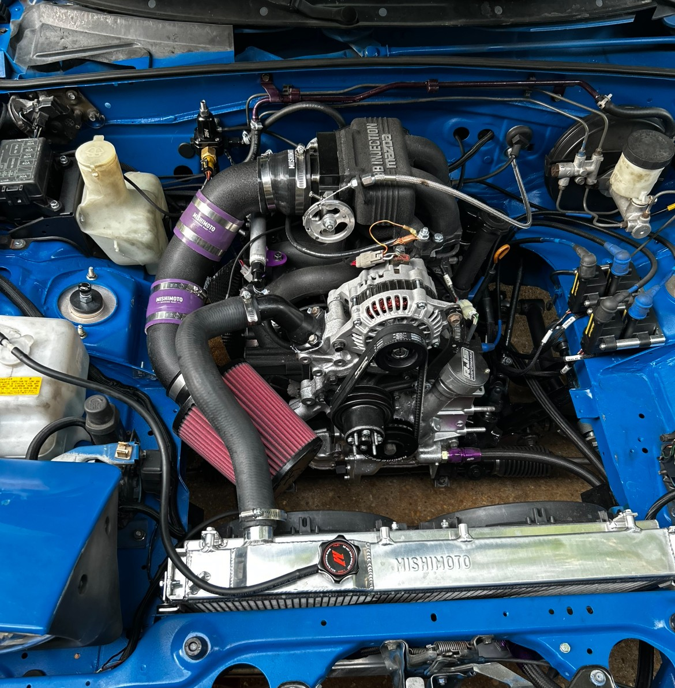
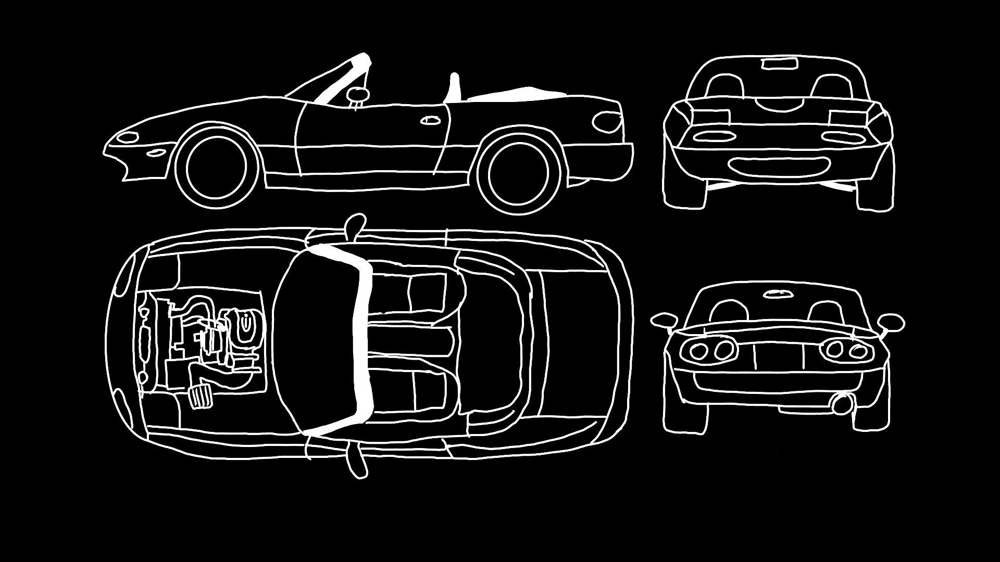
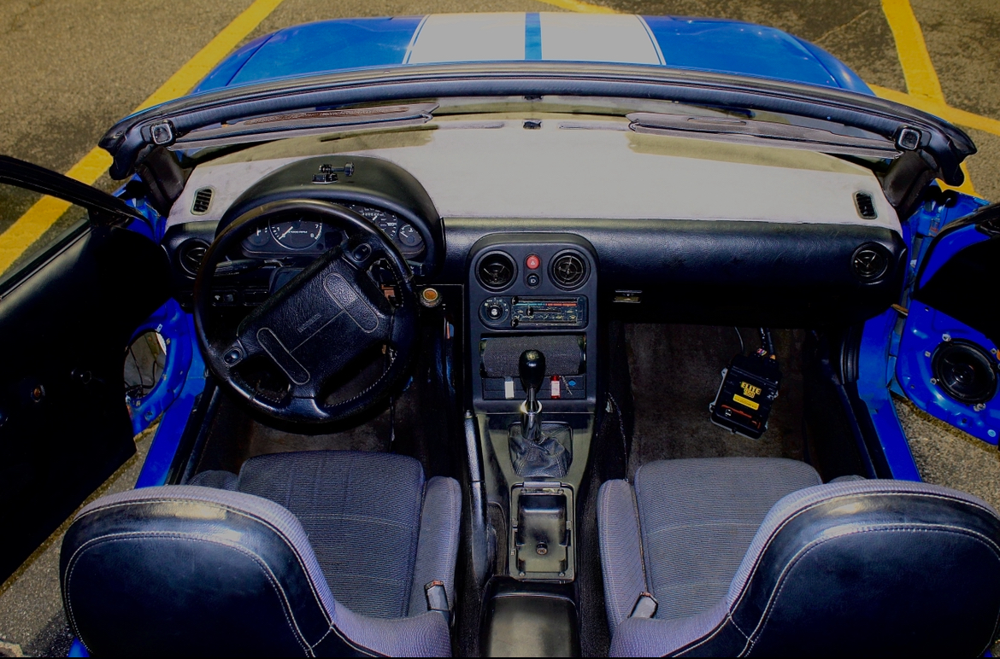

SHIFTHAPPENS ROTARY MIATA RESOURCE
Everything I wish I had in one place before rotary swapping my Miata.
There is no right or wrong way to do a swap, but here is how I did mine. Over the years I've collected information on diffrent rotary engines, transmissions, fabrication, fuel, cooling, wiring, exhaust, startup, and the problems that come with putting a rotary and more! You're going to hate it. Don't quit It'll pay off. Trust me - I'm the source


THE POINT OF THIS SITE
So you don't have to waste hours reading through 20yo forums or watch 50 videos for one answer.
For legal reasons this reference for people interested in rotary swapping an NA or NB Miata. I'll provide tips and information on what worked with me from general swap information.
I'm not officially endoursed by Mazda... Yet... I will upload sections of the Mazda shop manual, pictures of my process, and sketches in attempt to aid you. Beware I'm not an artist.
I could have done this swap for a fraction of what it costed me.

ROTARY MIATA SWAP GUIDE
Choose a system.
Engine
13B options, NA vs turbo, S4/S5 considerations.
Transmission
Gearbox choices, adapters, driveshaft and differential.
Mounting
Engine placement, mounts, tunnel clearance and fabrication.
Fuel System
Pumps, injectors, regulators, feed and return basics.
Cooling
Radiator, fans, hose routing and heat management.
Wiring & ECU
ECU, sensors, relays, power distribution and grounding.
Exhaust
Headers, routing, resonators and rotary-specific heat.
First Startup
Pre-flight checks before you hit the key for the first time.
The build
My Car Version 2.


Why document the build?
To help you and me by remembering what I did. A lot of rotary swap information is scattered across forums, old videos, Facebook groups, and one-off builds. It took me forever to find any useful information. Honestly most of my build time was speant researching. Even with extensive research, its easy to miss or get something wrong. Thats why I want do upload everything I wrote in my blue book to help people avoid my mistakes and buying unessecary and expensive parts just because other people say so without anything backing them up.
What I learned the hard way:
You will always find a better and cheaper solution after you dumped money and burned alot of time.
FAQ
Questions that keep showing up in my DMs.
Can I rotary-swap a Miata without cutting the car?
Nope better get that 2 year plan at harbor friegh for a welder.
What transmission should I use?
Depends on purpose of the build and how much power and abuse you will put on it. Plus a bad driver can still destroy the strongest gearboxes.
Do I need an aftermarket ECU?
Yes. So far I make harnesses for Haltech Elite 750 and 1500.
Can I copy your exact setup?
Go for it. Give credit where its due lol.
ABOUT SHIFT HAPPENS
Build it-Break it-Build it
I am a pilot that love to build things. I'm able to fabricate, wire, test, and document what actually happens during the build. I show the struggles and fails since you can't learn and grow without them.
Contact me: contact@shifthappensmotors.com or on instagram ShiftHappens1992